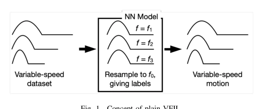
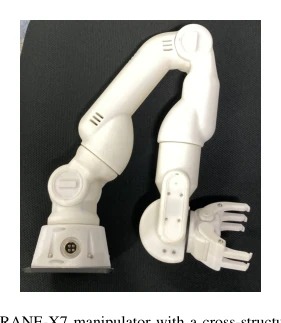
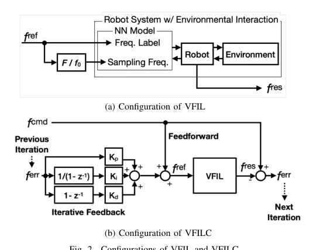
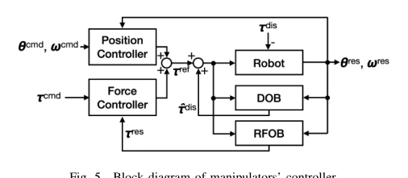
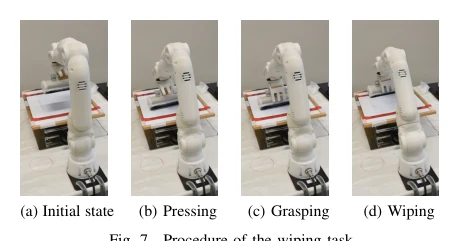

← 返回← Back
VFILC: Accurate Frequency Extrapolations in Imitation Learning via Sampling Frequency ILC
Nozomu Masuya, Toshiaki Tsuji, Sho Sakaino
abspdf
论文点评Review
这篇论文给模仿学习里的“变速”难题加了个反馈控制器，算是给 VFIL 这个“裸奔”模型穿上了反馈铠甲。作者声称在擦拭和摇晃任务里频率误差分别降低了 81% 和 50%，听起来很性感，但仔细看实验细节，混合任务里糖盐洒了一地（图 [4]），摇晃任务里还出现了拉试管角度不对的诡异行为（图 [5]）。说白了，这就是用迭代学习控制（ILC）硬扛非线性接触力，虽然有效，但低频率下效率低，而且每次迭代都要重跑 15 秒，效率感人。不过能在未训练的高频下 extrapolate，确实比纯插值强，只是这“迭代”的代价有点大，且对 PID 增益敏感，稍不注意就会震荡。
—
研究动机Motivation
现有的模仿学习处理变速运动时，要么只能插值（interpolated），要么外推（extrapolated）就崩。VFIL [7] 试图通过调整神经网络采样频率来解决，但它是开环的，遇到接触丰富的任务（contact-rich），非线性阻力会导致频率偏差，尤其在高频外推时误差显著。之前的工作如 [15] 虽然用了力控，但没解决时间域上的时序误差，且依赖大量数据。我们需要一种既能变速又能自我修正的方法，特别是在高频外推时，利用反馈补偿环境非线性带来的延迟，避免像 [14] 那样假设环境变化可忽略。
—

Fig. 2. Configurations of VFIL and VFILC.方法Method
核心是 VFILC，结合了 VFIL 和 ILC。数据流上，先用双边控制收集人类示范，训练 LSTM 网络（图 [3]）。推理时，VFIL 部分负责根据目标频率动态调整 NN 的采样率，将变速度运动归一化。ILC 部分负责纠错：第一 iteration 用前馈（feedforward）直接跑 VFIL，后续 iteration 用 PID 控制器根据上一轮的频率误差（$f_{err}$）调整输入频率指令（$f_{ref}$）（图 [1]）。这样既保留了 VFIL 的变速能力，又用反馈修正了高频下的延迟。公式上，$f_{ref}$ 由指令频率加上 PID 项组成，确保收敛。反馈仅在每次迭代结束时进行，防止采样频率波动。
—

Fig. 6. Configuration of the NN model.实验Experiments
用了 CRANE-X7 机械臂，三个任务：擦拭、混合、摇晃。基线是非 VFIL 和纯 VFIL。指标是实际频率与指令频率的误差。结果在 1.4Hz（训练 0.6Hz）下，擦拭任务误差降了 81%。混合任务在未见过的糖盐环境下也稳定，但洒料风险高（图 [4]）。摇晃任务在 25ml 水（未训练）下表现稳健，误差降 50%。但也暴露了问题，比如混合任务洒料，摇晃任务动作混淆（图 [5]）。成功率在 81% 到 98% 之间，证明方法有效但非完美。
—

Fig. 4. CRANE-X7 manipulator with a cross-structured hand.

Fig. 14. Spilling observed in the mixing task.

Fig. 17. Mixed behaviors between pulling and shaking.